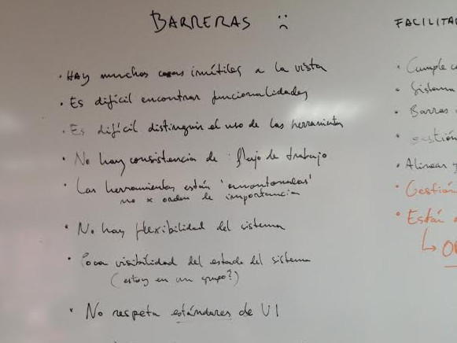
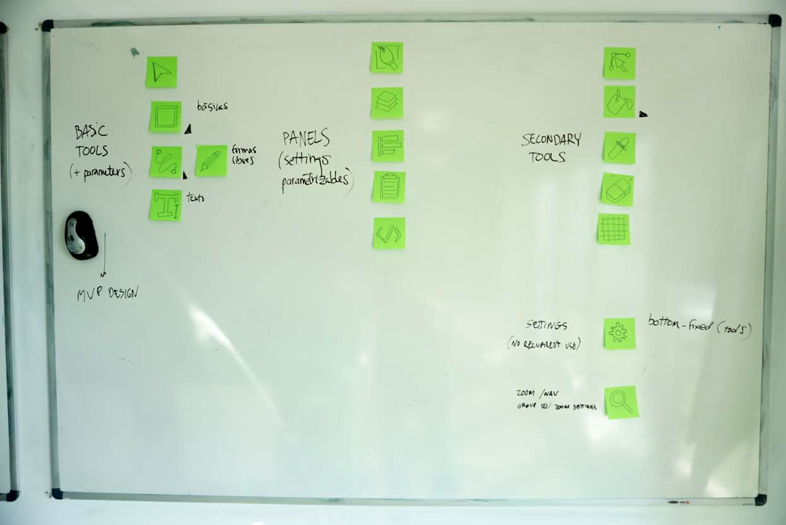
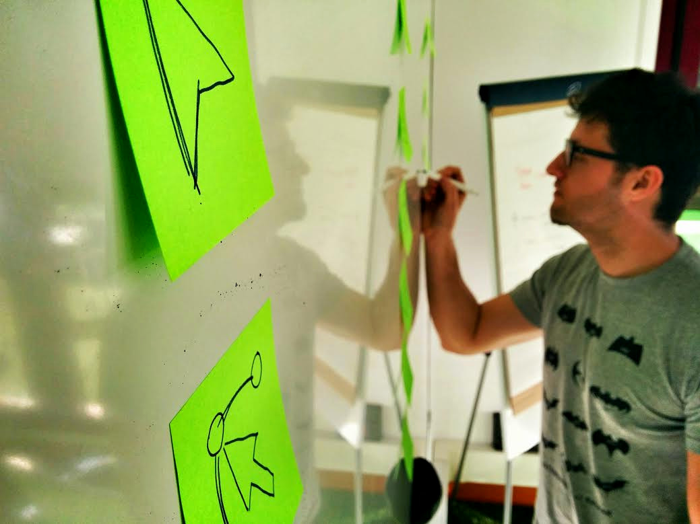

Our goal is
We want Inkscape to be the favourite tool for every...visual designerUX designerbackend developerweb designergraphic designerfrontend developer
Inkscape it’s open source, free, powerful and standard compliant. It makes web development and vectorial design easy and it’s widely supported by the community.
Born in 2003 and developed actively since then, it probably never had an actual UX and design work behind. By fixing this, we want to help Inkscape to be the best tool for every kind of designer.
We want Inkscape to be the favourite tool for every...visual designerUX designerbackend developerweb designergraphic designerfrontend developer
Usability
Design
Community
First of all we had a working session to determine the main problems, the main benefits and the main insights that led us to clarify the big picture.
With the investigation in mind, we decided that the main issues from a UX perspective that we have to approach are the structure, the tools and de visual design.
We are already drawing wireframes reflecting the conclusions we reached on our analysis and also making final design proposals.
We believe that grouping the type of content and functionalities provided to the user will greatly facilitate his tasks. Defining areas will help the user recognizing what he need without using his memory. We’ll discriminate between tools, subtools, panels and info.
We find several usability issues on current tools placements and organization. There are too many options at plain sight, with a questionable or difficult to understand organization and with no apparent hierarchy.
Our proposal implies grouping similar tools, organizing them with some kind of hierarchy and displaying options and parameters consistently.
Visual design can make the difference if we want inkscape to be used by all kind of designers (Visual, UX, Graphic, Interaction...) and non professional users. A modern, simple and visually beautiful interface will improve user experience.
This is not just an experimental idea or a funny ΠWEEK game. We actually got in touch with the real inkscape developer and started an agile conversation to make this real. Some of them are giving us some feedback and we started to iterate.
Inkscape is primarily created by volunteers and other people who are passionate... share your passion with us. Whatever way your team goes, we're excited to see what you come up with. :) We're also happy to have you as users and in our development community!Josh Andler (@ScislaC)Inkscape developer
Glad to hear you love Inkscape! We would love to have you collaborate with us. I think most current Inkscape developers recognize that our UI could use some serious work. Most of it has been added piece-meal over the years with out much thought about consistency.Tavmjong BahSVG W3C Group Inkscape representative
Wuaauuu!! Your ideas seems very chagenlling and very attractive. I like so much your mockups, and I think this way will improve usability and general user attractiveness for Inkscape.Fernando Cuenca MargalefA guy from Indra
Many of your ideas could be proper tools, while others should be re-thought when it comes to the panels and how they are activated and hidden.Martin Owens. (@realdoctomo)Inkscape developer, Artist, and twit
Purple in the morning, blue in the afternoon, orange in the evening.
You know why, David? Because of the kids. They called me Mr Glass.
In a comic, you know how you can tell who the arch-villain's going to be?